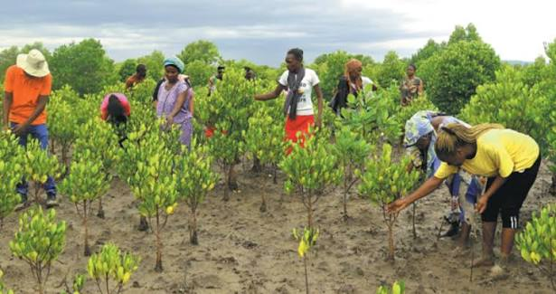
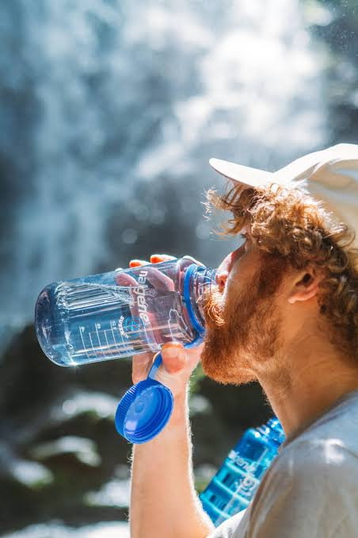
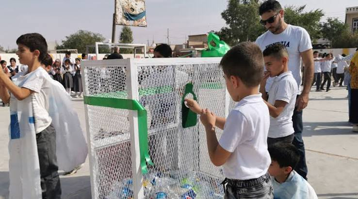

Mangrove Shoreline Restoration
Replanting mangrove belts to shield fishing villages from erosion and storm surge.
Ongoing
Cooperation and Climatology Union restores mangroves, secures clean water and builds climate-resilient coastal communities across Takoradi and the wider Western Region.
Founded by a group of young environmentalists in Sekondi-Takoradi, Cooperation Union ("Cooperation" means together we can in Akan) partners with fishing communities, schools and local government to reverse coastal degradation and prepare families for a changing climate.
Since 2019 we have planted thousands of mangrove seedlings, installed community water points, trained recycling co-operatives and taken climate education into more than forty basic schools.
More about our story →
A snapshot of the work happening along the coast right now.
Replanting mangrove belts to shield fishing villages from erosion and storm surge.
Ongoing
Borehole rehabilitation and hygiene training bringing safe water to 900 households.
Ongoing
Beach clean-ups feeding a women-led plastic recycling co-operative in Sekondi.
Phase 1 Completed"Since the mangroves came back, our canoes are safer and the fish are returning to the creek."

"The climate club taught my students to build their own rain gauges. They now teach their parents."

"Selling sorted plastic every week has doubled my household income."
Whether it's an hour on a beach clean-up or a monthly donation, every action restores a little more of our coastline.